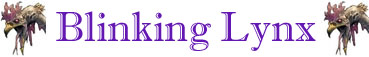
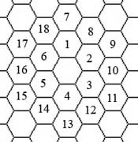

Attacco Veloce Minore;
Dilaniare Inferiore;
Schivata Migliorata;
Blinking;

|
|
Ambiente/Habitat | Montagne, Colline |
| Frequenza | Rara | |
| Organizzazione | Solitario | |
| Periodo di Attività | Qualsiasi | |
| Dieta | Carnivora | |
| Intelligenza | Very intelligent (11) | |
| Punti Combattimento | 17 Punti Combattimento | |
| Tesoro | Nessuno | |
| Allineamento Dominante | Caotico Neutrale | |
| Numero di Apparizione | 1 | |
| Classe Armatura | 3 [10 base, 4 corazza, -3 destrezza] | |
| Movimento | 9 esagoni | |
| Dadi Vita | 8 (+ 5 punti ferita) | |
| Thac0 | Thac0 12 | |
| Numero di Attacchi | Artiglio/Artiglio/Morso | |
| Danni | 1d6+2 (taglio) / 1d6+2 (taglio) / 1d8+2 (taglio) | |
| Poteri Offensivi |
Istinto Predatorio; Attacco Veloce Minore; Dilaniare Inferiore; |
|
| Poteri Difensivi |
Robustezza
Superiore
(+ 5 punti ferita); Schivata Migliorata; Blinking; |
|
| Poteri Generici | Salto Inferiore; | |
| Vulnerabilità | Nessuna; | |
| Resistenza alla Magia | 10% | |
| Sensi | Infravisione (21 metri); Sensi Superiori; | |
| Dimensioni | Large (2,50 m. di lunghezza) | |
| Morale | Elite (14) | |
| Valore in Punti Esperienza | 2840 |
|
TIRI SALVEZZA DELLA CREATURA |
|||||||
| CORAGGIO | ENERGIA VITALE | MAGIA* | MALATTIA | MENTE | RIFLESSI | ROBUSTEZZA | VELENO |
| 0 | 0 | +10% | 0 | 0 | +10% | 0 | 0 |
| 42 | 47 | 47 | 41 | 55 | 39 | 44 | 38 |
Descrizione
Questa enorme lince lunga circa due metri e mezzo è caratterizzata da uno sguardo particolarmente intelligente e da una pelliccia folta dal colore azzurro e cosparsa di macchie marroni e verdastri.
Combat
Questo predatore attacca le proprie vittime in corpo a corpo saltandole addosso e cercando di dilaniare le loro carni e schivando, nel contempo, i loro attacchi. Questa creatura usa solitamente i propri punti combattimento per velocizzare i propri attacchi in modo tale da riuscire ad effettuarli prima di svanire con il proprio potere di teletrasporto. Se gravemente ferita userà tale potere e l'abilità di salto per fuggire via.
ISTINTO PREDATORIO (Moderate Special Ability): La creatura possiede un forte istinto predatorio, per tale motivo costei riceve un bonus costante di +1 ai suoi tiri per colpire.
ATTACCO VELOCE
MINORE
(Lesser Special Ability):
Questa creatura è in grado di effettuare i propri attacchi più velocemente del
normale. Costei quindi riceve un
bonus all'iniziativa dei propri attacchi pari a - 2,
fermo restando il limite minimo di +1 al fattore iniziativa del proprio attacco.
Inoltre,
qualora i tiri di iniziativa sugli attacchi effettuati dalla creatura abbiano un
risultato superiore, questi saranno considerati
pari ad 9.
DILANIARE
INFERIORE
(Least Special
Ability): Qualora questa creatura
colpisce con entrambi gli artigli lo stesso avversario ne dilania il corpo
infilando gli artigli nello stesso per poi allargare con forza le possenti zampe
producendo 1d6 danni da lacerazione
supplementari. Creature non dotate
di un comune corpo di carne sono immuni agli effetti di questo attacco speciale
(ad esempio i costruiti, eccetto quelli di carne, gli elementali, gli scheletri,
le creature incorporee, le melme ecc...).
ROBUSTEZZA SUPERIORE (Typical Ability): Il fisico di questa creatura è estremamente robusto conferendole una robustezza superiore che le garantisce 5 punti ferita supplementari.
|
BLINKING (Powerful Special Ability): Questo potere si sostanzia in una forma di trasporto magico difensivo, casuale, ad intermittenza ed a breve distanza. Nel corso di un qualsiasi round di combattimento, quando la creatura desidera (la scelta deve avvenire necessariamente all'inizio del round), la stessa sarà automaticamente teletrasportata in una posizione casuale diversa da quella occupata. Si noti che una volta iniziata la magia non potrà essere interrotta dal mago. In particolare, sarà necessario tirare 2d6. Il risultato di questo tiro determinerà il fattore iniziativa all'interno del round in cui si verificherà il teletrasporto (ossia il momento in cui la creatura si troverà nella nuova diversa posizione). La creatura sarà teletrasportata in una posizione libera selezionata casualmente tra tutte le posizioni che si trovano entro 6 metri di distanza dallo stesso. Per determinare la posizione di arrivo si tiri 1d20 e si consulti il relativo scatter. Con un risultato di 19 o 20, su questo tiro di dado, la creatura potrà determinare a sua scelta la posizione di arrivo. Qualora la prima posizione di arrivo selezionata casualmente risulta occupata sarà necessario rinnovare il tiro fino a che non risulti una posizione libera (ignorando però, in questo caso, ogni risultato pari a 19 o 20). Se non vi sono posizioni libere nel raggio del teletrasporto il potere non si attiverà. Qualora la creatura decida di effettuare una qualsiasi azione costei dovrà effettuarla prima del verificarsi del teletrasporto. Il teletrasporto magico, infatti, è così stressante per il fisico della creatura da impedire ogni sorta di azione complessa dopo il suo verificarsi. Dopo essersi teletrasportata, infatti, la creatura potrà unicamente effettuare un'azione di mezzo movimento (sempre che non l'abbia effettuata nella fase del round precedente all'effetto di trasporto magico). Se la creatura aveva iniziato il compimento di una qualsiasi azione la quale non risulti terminata al momento del teletrasporto tale azione si considererà fallita. |
 |
SCHIVATA MIGLIORATA (Moderate Special Ability): La creatura è particolarmente agile. Una volta al round, infatti, la stessa potrà provare a schivare un qualsiasi attacco ricevuto in corpo a corpo da una posizione frontale che non sia di dimensioni superiori a large. La creatura ha il 25% di riuscire a schivare il colpo in arrivo. Questo tiro percentuale va effettuato prima del tiro per colpire effettuato dall'avversario. Se l'avversario effettua un 20 naturale sull'attacco che la creatura era riuscita a schivare lo stesso andrà comunque a segno ma senza conseguenze critiche. Al tiro percentuale andranno applicate le penalità previste per il mantenimento della concentrazione in situazioni di combattimento particolari (come ad esempio incapacitato). La creatura non potrà provare a schivare in alcun caso attacchi a distanza.
SALTO INFERIORE (Lesser Special Ability): Quando questa creatura si trova sul terreno, una volta per ogni singolo round, può, in luogo di spostarsi di 3 metri di movimento (o anche di mezzo movimento), effettuare un grande balzo fino a 6 metri di distanza. Si noti che, qualora la creatura utilizza questo metodo di movimento per uscire dal corpo a corpo la stessa dovrà subire normalmente gli attacchi di opportunità.
MODERATE COMBO - ATTACCO VELOCE MINORE e BLINKING - Le due abilità costituiscono una combo in quanto la prima rende maggiormente efficace in combattimento la seconda. In considerazione della stretta attinenza e correlazione di utilità tra i due poteri la combo può considerarsi moderata.
Habitat/Society
Questa creatura si aggira tra le montagne in cerca di prede. Il suo nemico giurato è la Displacer Beast con la quale ingaggia furiosi combattimenti. Nonostante sia una creatura estremamente intelligente non parla alcuna lingua ma, se dimora nei pressi di una zona civilizzata, potrà solitamente comprender e le principali parole nella lingua ivi utilizzata. Il suo carattere schivo, il temperamento da predatore ed il comportamento imprevedibile, anche dettato dall'allineamento dominante, rende però alquanto complicato gestire od avere a che fare con questa creatura.
Ecology
Questa rara
creatura il cui corpo è intriso di aura magica è molto ricercata dagli Utenti di
Magia per le risorse mistiche che è possibile recuperare dal suo cadavere. Anche
la pelliccia di questa creatura è particolarmente pregiata ed utilizzata per
fabbricare mantelli o cappotti. Uno skinner esperto può recuperare, con una
penalità di -1 alla prova, tale pelliccia dal cadavere di questa creatura.
Questa pelliccia ha un valore di mercato che si aggira intorno alle 350 monete
d'oro.
Mystical Resource Sourge
(Coda) Quantità:
1, Presenza 25% - Scuola di Magia:
Alteration
- Qualità della Risorsa:
Uncommon.
Mystical Resource Sourge
(Cuore) Quantità: 1, Presenza 33% - Scuola di Magia:
Enchantment
- Qualità della Risorsa:
Common.